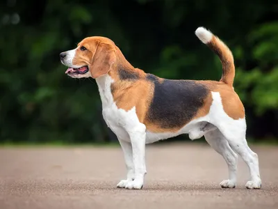

The Beagle is a breed of small scent hound, similar in appearance to the much
larger foxhound. The beagle was developed primarily for hunting hare, known as
beagling. Possessing a great sense of smell and superior tracking instincts, the
beagle is the primary breed used as a detection dog for prohibited agricultural
imports and foodstuffs in quarantine around the world. The beagle is intelligent
and is a popular pet due to its size, good temper, and a lack of inherited health
problems.

More Images